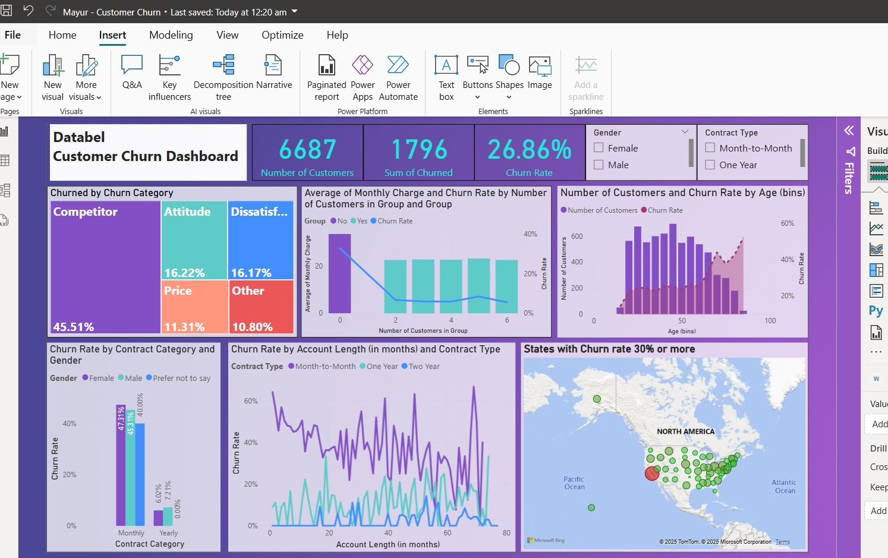

Projects

Customer Churn Dashboard
Designed in Power BI to visualize churn trends by demographics and region. Leveraged DAX for KPIs to support retention strategies.
View Project →
Car Price Prediction
Built and optimized a linear regression model in RapidMiner to predict car prices using brand, mileage, and fuel type with high accuracy.
View Project →